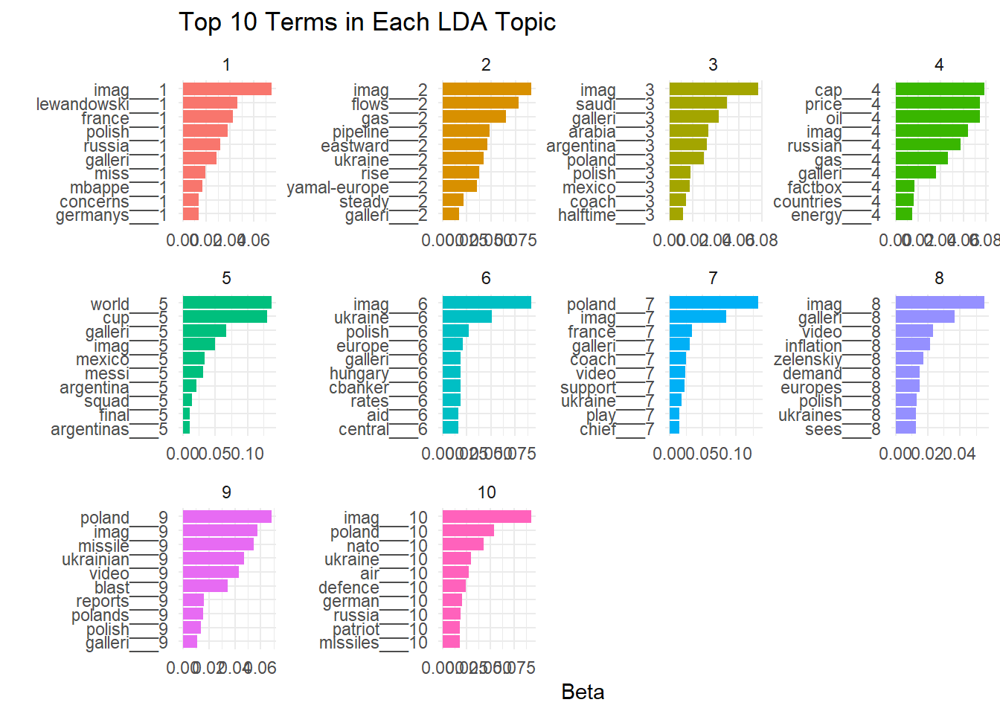
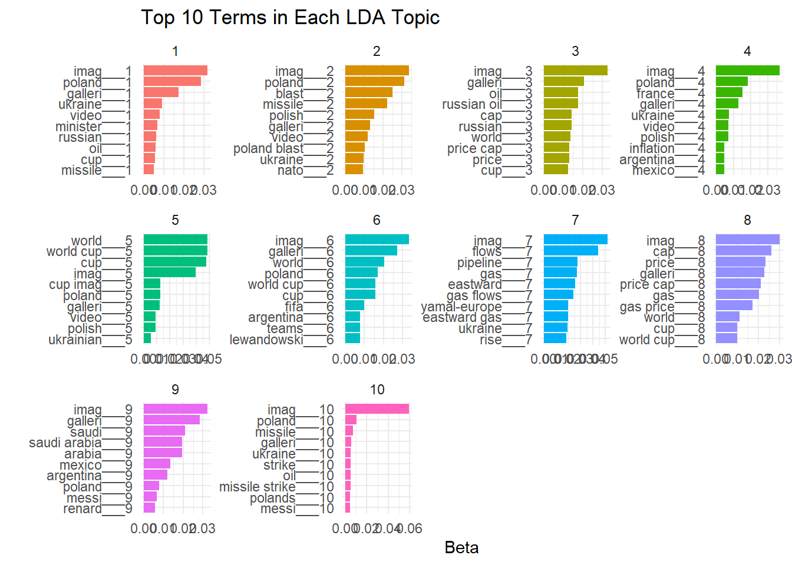

Reuters Article Titles Classification - Reproducible Research 2023
Authors
Hassnaa Abdelghany
Artur Skowroński
Daniel Śliwiński
Published
June 17, 2023
“Reuters Logo”
Introduction
Plenty of news sources created a need to develop automated systems that can help categorize and organize content effectively. This project is a collaborative effort that aims at addressing this need by focusing on the classification of Reuters articles based on their titles. We developed this project in R, and it is essentially a reproduction of the Python codes which were initially employed. A version control system, Git, was instrumental in facilitating teamwork.
Project Objective
The primary goal of this project was to collaborate with others using Git, in order to make research reproducible. The analytical objective is to categorize the Reuters articles into different topics or classes based on the content present in their titles.
Data Source
We make use of a dataset comprising Reuters articles. Each record in the dataset contains the title of the article and the label representing its category. The dataset underwent preprocessing to ensure that the titles do not contain any duplications.
Preprocessing and Text Cleaning
Text data typically require considerable preprocessing before they can be used for modeling. In this case it was not so difficult, as the titles were short. This project includes some text preprocessing techniques such as:
Removing special characters and numbers: This is done to ensure that only meaningful words are used in the analysis.
Lowercasing: Converting all the text to lowercase ensures that the analysis is case-insensitive.
Stopword Removal: Common words such as “and”, “the”, “is”, etc., are often removed before analyzing the text as they typically don’t contain useful information for analysis.
Stemming: This involves reducing words to their root form. For example, “running” becomes “run”. This is done to ensure that the various forms of a word are represented as a single token.
Feature Engineering
After cleaning, we convert the text data into a numerical format which can be used by the machine learning models. This project makes use of the Term Frequency-Inverse Document Frequency (TF-IDF) weighting scheme for this purpose.
Model Development
This project employs two machine learning algorithms for the classification task. We used a Random Forest model and a Bagging model. We train these models using the features created from the article titles and evaluate their performance using metrics such as accuracy and confusion matrix.
Topic Modeling
In addition to classification, we also perform topic modeling using Latent Dirichlet Allocation (LDA) to discover the underlying topics in the titles. This can be very useful in understanding what kinds of topics or themes are prevalent in the data, but in this case it showcased that these titles are not too suited for topic modelling. We visualize the top terms in each topic identified by LDA.
Visualization
We make use of two visualization techniques to understand the data better and to interpret the results of our models. This includes plotting the top terms in each topic identified by LDA and generating a word cloud.
Functions
Here we define key functions for our project.
Code
```{r}### Functions# Function for plotting top n terms in k lda topicsplot_lda_topics <-function(articles, k, num_top_terms =10, min_ngram=1, max_ngram=2) {# Create a Corpus corpus <-VCorpus(VectorSource(stemmed_articles))# Define tokenizing function inside a function again for ngram control myTokenizer <-function(x) {NGramTokenizer(x, Weka_control(min = min_ngram, max = max_ngram)) }# Create a Document-Term Matrix (DTM) with bigrams and trigrams dtm <-DocumentTermMatrix(corpus, control =list(tokenize = myTokenizer))# Run LDA model lda <-LDA(dtm, k = k, control =list(seed =3434))# Get the top terms for each topic topics <-tidy(lda, matrix ="beta") top_terms <- topics %>%group_by(topic) %>%top_n(num_top_terms, beta) %>%ungroup() %>%arrange(topic, -beta)# Plot the LDA topics plot_lda <- top_terms %>%mutate(term =reorder_within(term, beta, topic)) %>%ggplot(aes(beta, term, fill =factor(topic))) +geom_col(show.legend =FALSE) +facet_wrap(~ topic, scales ="free") +theme_minimal() +labs(title =paste("Top",k, "Terms in Each LDA Topic"), x ="Beta", y ="")print(plot_lda)}# Function to read txt and return data frame. We do not use it in our codes,# this is just for reproducibility of python codes only.multiTextFile <-function(directoryPath) {# Get the list of file names in the directory fileNames <-list.files(path = directoryPath, pattern ="\\.txt$", full.names =TRUE)# Create an empty list to store the data frames dataFrames <-list()# Read each file and store it as a separate data framefor (filePath in fileNames) { data <-read.table(filePath, header =TRUE) # Modify read function based on your file format# Add the data frame to the list dataFrames <-c(dataFrames, list(data)) }# Merge the data frames into a single data frame mergedData <-do.call(rbind, dataFrames)names(mergedData) <-'text' mergedData <- mergedData[!duplicated(mergedData$text), ]# Return the merged data framereturn(mergedData)}# Function to read csv filecsvText <-function(file, textCol, labelCol) { data <-read.csv(file) data = data[,c(textCol,labelCol)]names(data) =c('text','label')names(data[,labelCol]) ='label' data <- data[!duplicated(data$text), ] data$text =as.character(data$text) data$label =as.factor(data$label)return(data)}# Merge label col to data frame. We do not use it either, this is also for# reproducibility purposes only.assignLabels <-function(df,labels) { df <-cbind(df,labels)names(df)[2] ='label'return(df)}# Drop labels in case of duplicatesvalidLabels <-function(df) { labelcount <-table(df$label) repeated <-names(labelcount[labelcount >1]) df <- df[df$label %in% repeated, ] df <-droplevels(df) # Drop unused levels if neededrownames(df) <-seq_len(nrow(df))return(df)}# Text cleaning functioncleanText <-function(data) { data$text <-str_replace_all(data$text, "\n", " ") data$text <-str_replace_all(data$text, "[0-9]+", "") data$text <-str_replace_all(data$text, "[,\\!?/:;''()``’“-”—#]", "") data$text <-str_replace_all(data$text, "[.]+", "") data$text <-tolower(data$text) data$text <-str_replace_all(data$text, "\\b\\w\\b", "") data$text <-as.character(data$text)return(data$text)}# Function to remove stopwords. Lowercase is just in case we would want to use it# On not cleant texts.remove_stopwords <-function(texts, stopwords) { cleaned_texts <-lapply(texts, function(text) {# Tokenize the text tokens <-strsplit(tolower(text), "\\s+")# Remove stopwords tokens_clean <- tokens[[1]][!(tokens[[1]] %in% stopwords)]# Join the cleaned tokens back into a text cleaned_text <-paste(tokens_clean, collapse =" ")# Return the cleaned textreturn(cleaned_text) })return(cleaned_texts)}# Stemming function to reduce words to their base or root form. In this case we# use 'Porter Stemmer', to reproduce results from python codes.stem_articles <-function(articles) { stemmed_articles <-character(length(articles))for (i in1:length(articles)) { words <-c()for (word in articles[[i]]) { stemmed_word <- SnowballC::wordStem(word, "porter") words <-c(words, stemmed_word) } stemmed_articles[i] <-paste(words, collapse =" ") }return(stemmed_articles)}# Custom tokenizing function, as it is much harder to obtain in R than in Python.# We use RWeka library here as well, as many packages do not work with Document# Term Matrix. In the Python codes we create Document Term Matrix with unigrams,# bigrams and trigrams. But here for the sake of computational speed we use just# unigrams. Results in accuracy differ due to this fact slightly.myTokenizer <-function(x) {NGramTokenizer(x, Weka_control(min =1, max =1))}# Function to perform train-test split. It returns a list of objects, which are # later used in modelling.train_test_split <-function(dtm_tfidf, myData, partition_ratio) {# Split the dataset into training and testing sets trainIndex <-createDataPartition(myData$labelnumber, p = partition_ratio, list =FALSE, times =1)# Split the labels as well train_labels <- myData$labelnumber[trainIndex] test_labels <- myData$labelnumber[-trainIndex]# Split the dtm_tfidf train <- dtm_tfidf[trainIndex,] test <- dtm_tfidf[-trainIndex,]# Prepare matrices suitable for Random Forest train_df <-as.data.frame(as.matrix(train)) test_df <-as.data.frame(as.matrix(test))colnames(train_df)[ncol(train_df)] <-"labelnumer"colnames(test_df)[ncol(test_df)] <-"labelnumer"# Rename the columns to use only alphanumeric characters and underscoresnames(train_df) <-make.names(names(train_df), unique =TRUE)names(test_df) <-make.names(names(test_df), unique =TRUE)# Return the training and testing data frames and labelsreturn(list(train_df = train_df, test_df = test_df, train_labels = train_labels, test_labels = test_labels))}# Function to create a word cloud from cleaned articlescreateWordCloud <-function(cleaned_articles, min_ngram=1, max_ngram=1) {# Define tokenizing function inside a function again for ngram control myTokenizer <-function(x) {NGramTokenizer(x, Weka_control(min = min_ngram, max = max_ngram)) }# Creat document term matrix from cleaned texts but not stemmed ones. corpus <-VCorpus(VectorSource(cleaned_articles))# Create a Document-Term Matrix (DTM) dtm <-DocumentTermMatrix(corpus, control =list(tokenize = myTokenizer))# Get the word frequencies from the document term matrix word_frequencies <-colSums(as.matrix(dtm))# Sort the word frequencies in decreasing order word_frequencies <-sort(word_frequencies, decreasing=TRUE)# Create a data frame with words and their frequencies df <-data.frame(word=names(word_frequencies), freq=word_frequencies)# Generate the word cloudwordcloud(words = df$word, freq = df$freq, min.freq =1,max.words=200, random.order=FALSE, rot.per=0.35, colors=brewer.pal(8, "Dark2"))}```
Data preparation
Code
```{r}# Read the datamyData <-csvText('fulldata-updated.csv', 'title', 'label')# Validate the labelsmyData <-validLabels(myData)# Clean texts, remove punctuation and unnecessary symbolsarticles <-cleanText(myData)# Create custom stopwords, so we could merge them with the stp.csv file.# Words 'article' and 'with' are not useful in this case and all of the files# contain these words, which just makes the computation longer.stopwordscustom <-read.csv('stp.csv', header =FALSE, col.names =c('word'))stopwordscustom <-c(stopwordscustom$word, 'article', 'with')# Remove stopwords. Now we have truly cleant textsarticles_clean <-remove_stopwords(articles, stopwordscustom)# Stemmingstemmed_articles <-stem_articles(articles_clean)# Create a Corpuscorpus <-VCorpus(VectorSource(stemmed_articles))# Create a Document-Term Matrix (DTM)dtm <-DocumentTermMatrix(corpus, control =list(tokenize = myTokenizer))# Apply TF-IDF weighingdtm_tfidf <-weightTfIdf(dtm)# Label encodingmyData$labelnumber <-as.numeric(as.factor(myData$label))# Merge the labels with the dtm_tfidfdtm_tfidf <-cbind(dtm_tfidf, myData$labelnumber)# Perform train-test splitsplit_data <-train_test_split(dtm_tfidf, myData, 0.6)train_df <- split_data$train_dftest_df <- split_data$test_dftrain_labels <- split_data$train_labelstest_labels <- split_data$test_labels```
Random Forest achieved accuracy of 86% when trained on single tokens for computational speed. In the original codes we did that with unigrams, bigrams and trigrams.
Code
```{r}### First model# Train the modelmodel <-ranger(as.factor(train_labels) ~ ., data = train_df, importance ='impurity', num.trees =500)# Predict on the test setpredictions <-predict(model, test_df)# Evaluate model performancemodel_performance <-table(predictions$predictions, test_labels)# Check accuracyaccuracy <-sum(predictions$predictions == test_labels) /length(test_labels)# Define the levels that should existall_levels <-1:11# Adjust this to the levels we expect to have# Convert predictions and test_labels to factor and explicitly set the levelspredictions_factor <-factor(predictions$predictions, levels=all_levels)test_labels_factor <-factor(test_labels, levels=all_levels)# Compute the confusion matrixcm <-confusionMatrix(predictions_factor, test_labels_factor)```
Our model performs well in term of the 3, 7 and 11th labels. It is clear that although there are 11 labels in the dataset, it is quite unbalanced, which makes it much easier to train as majority of the labels fall into these 3 categories.
Code
```{r}### Second model# Run a Bagging modelcontrol <-trainControl(method ="cv", number =2) # Changed method to 'cv' for cross-validation and number to 2 for 2-fold cross-validation, as it is computationally heavy.model_bag <- caret::train(as.factor(labelnumer) ~ ., data=train_df, trControl=control, method="treebag")predictions_bag <-predict(model_bag, newdata = test_df, type="raw")# Compute the confusion matrix for bagging modelcm_bag <-confusionMatrix(predictions_bag, test_labels_factor)```
Confusion matrix for the second model:
Code
```{r}# Print the confusion matrixprint(cm_bag)```
Bagging model performed much worse in this case on unigrams. Training it on sparser matrices with bigrams and trigrams requires a lot of computational power. In this case variance based dimension reducing approach would be helpful as implemented in python codes, however we did not manage to reproduce it in R.
Visualization
Topic modelling
We can check different combinations of n-grams for topic modelling when creating document term matrix.
```{r}# Plot top terms in topicsplot_lda_topics(articles = articles_clean, k =10, num_top_terms =10,min_ngram =1, max_ngram =1) ```

Code
```{r}# Plot top terms in topicsplot_lda_topics(articles = articles_clean, k =10, num_top_terms =10,min_ngram =1, max_ngram =2) ```
Code
```{r}# Plot top terms in topicsplot_lda_topics(articles = articles_clean, k =10, num_top_terms =10,min_ngram =1, max_ngram =3) ```

There is no difference between second and third combination, however results slightly differ between first and the other ones. Maybe term ‘image’ could be removed as well, but we thought that maybe some article title topics will have more images than the others in them.
There aren’t many common unigrams and the same goes for bigrams and trigrams.
Summary
This project illustrates the process of classifying articles into categories based on their titles using machine learning models. It consists of really simple preprocessing and feature engineering steps, followed by model training, evaluation, and visualization.
By reproducing Python code in R, the project demonstrates that similar analyses can be conducted in different programming languages. However it must be said, that reproducing exactly the same results is extremely challenging due to differences in functions and packages. We all agree that python was much easier in this case.
The collaborative nature of this project, facilitated by Git, underlined the importance of teamwork in data science projects. There were multiple times were reset head soft or quick lookup of 10 commits prior saved our lives. Git definitely made it much simpler.
Using quarto made it really easy to create the summary file of our project. Saving environment with renv package was also incredibly simple. Last but not least, we do all agree that now the codes look much cleaner and it was a good pracice of proper coding.